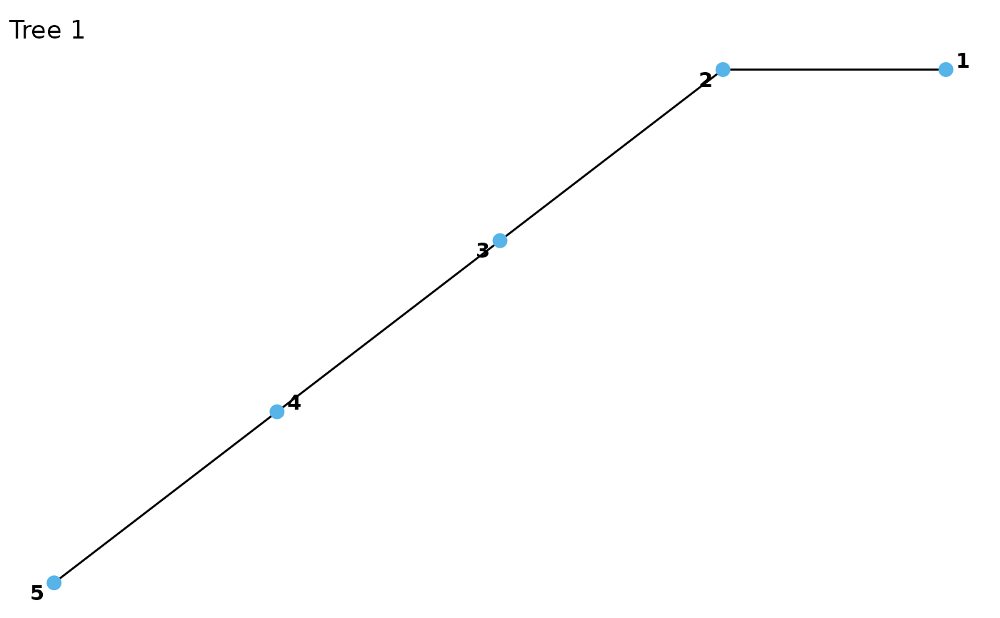
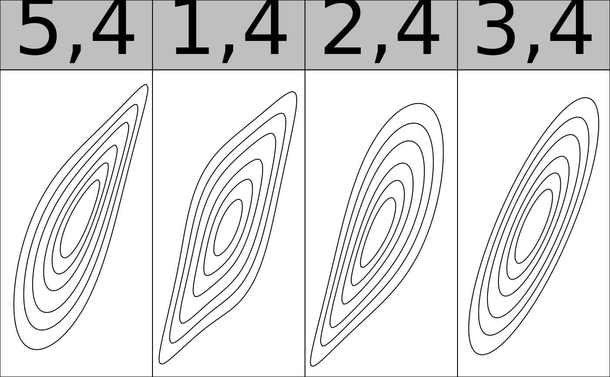

Fitting vine copula models
vinecop.RdAutomated fitting and model selection for vine copula models with continuous or discrete data.
vinecop( data, var_types = rep("c", ncol(data)), family_set = "all", structure = NA, par_method = "mle", nonpar_method = "constant", mult = 1, selcrit = "bic", weights = numeric(), psi0 = 0.9, presel = TRUE, trunc_lvl = Inf, tree_crit = "tau", threshold = 0, keep_data = FALSE, show_trace = FALSE, cores = 1 )
Arguments
| data | a matrix or data.frame with at least two columns, containing the (pseudo-)observations for the two variables (copula data should have approximately uniform margins). More columns are required for discrete models, see Details. |
|---|---|
| var_types | variable types, a length d vector; e.g., |
| family_set | a character vector of families; see |
| structure | an |
| par_method | the estimation method for parametric models, either |
| nonpar_method | the estimation method for nonparametric models, either
|
| mult | multiplier for the smoothing parameters of nonparametric families. Values larger than 1 make the estimate more smooth, values less than 1 less smooth. |
| selcrit | criterion for family selection, either |
| weights | optional vector of weights for each observation. |
| psi0 | prior probability of a non-independence copula (only used for
|
| presel | whether the family set should be thinned out according to symmetry characteristics of the data. |
| trunc_lvl | the truncation level of the vine copula; |
| tree_crit | the criterion for tree selection, one of |
| threshold | for thresholded vine copulas; |
| keep_data | whether the data should be stored (necessary for using
|
| show_trace | logical; whether a trace of the fitting progress should be printed. |
| cores | number of cores to use; if more than 1, estimation of pair copulas within a tree is done in parallel. |
Value
Objects inheriting from vinecop and vinecop_dist for vinecop(). In
addition to the entries provided by vinecop_dist(), there are:
threshold, the (set or estimated) threshold used for thresholding the vine.data(optionally, ifkeep_data = TRUEwas used), the dataset that was passed tovinecop().controls, alistwith fit controls that was passed tovinecop().nobs, the number of observations that were used to fit the model.
Details
Discrete variables
When at least one variable is discrete, two types of
"observations" are required in data: the first \(n x d\) block
contains realizations of \(F_{X_j}(X_j)\). The second \(n x d\)
block contains realizations of \(F_{X_j}(X_j^-)\). The minus indicates a
left-sided limit of the cdf. For, e.g., an integer-valued variable, it holds
\(F_{X_j}(X_j^-) = F_{X_j}(X_j - 1)\). For continuous variables the left
limit and the cdf itself coincide. Respective columns can be omitted in the
second block.
Partial structure selection
It is possible to fix the vine structure only in the first trees and select
the remaining ones automatically. To specify only the first k trees, supply
a k-truncated rvine_structure() or rvine_matrix(). All trees up to
trunc_lvl will then be selected automatically.
See also
vinecop(), dvinecop(), pvinecop(), rvinecop(),
plot.vinecop(), contour.vinecop()
Examples
## simulate dummy data x <- rnorm(30) * matrix(1, 30, 5) + 0.5 * matrix(rnorm(30 * 5), 30, 5) u <- pseudo_obs(x) ## fit and select the model structure, family and parameters fit <- vinecop(u) summary(fit)#> # A data.frame: 10 x 10 #> tree edge conditioned conditioning family rotation parameters df tau loglik #> 1 1 4, 1 clayton 180 2.8 1 0.58 16.6 #> 1 2 1, 2 joe 0 3.3 1 0.55 14.1 #> 1 3 3, 2 clayton 180 3 1 0.60 17.4 #> 1 4 2, 5 clayton 180 2.5 1 0.55 14.2 #> 2 1 4, 2 1 clayton 180 0.57 1 0.22 2.8 #> 2 2 1, 5 2 gumbel 0 1.3 1 0.21 2.2 #> 2 3 3, 5 2 joe 0 1.7 1 0.29 5.2 #> 3 1 4, 5 2, 1 indep 0 0 0.00 0.0 #> 3 2 1, 3 5, 2 indep 0 0 0.00 0.0 #> 4 1 4, 3 5, 2, 1 indep 0 0 0.00 0.0plot(fit)contour(fit)## select by log-likelihood criterion from one-paramter families fit <- vinecop(u, family_set = "onepar", selcrit = "bic") summary(fit)#> # A data.frame: 10 x 10 #> tree edge conditioned conditioning family rotation parameters df tau #> 1 1 4, 1 clayton 180 2.8 1 0.584 #> 1 2 1, 2 joe 0 3.3 1 0.552 #> 1 3 3, 2 clayton 180 3 1 0.603 #> 1 4 2, 5 clayton 180 2.5 1 0.551 #> 2 1 4, 2 1 clayton 180 0.57 1 0.222 #> 2 2 1, 5 2 gumbel 0 1.3 1 0.210 #> 2 3 3, 5 2 joe 0 1.7 1 0.290 #> 3 1 4, 5 2, 1 joe 270 1.3 1 -0.148 #> 3 2 1, 3 5, 2 frank 0 0.96 1 0.106 #> 4 1 4, 3 5, 2, 1 joe 180 1.2 1 0.094 #> loglik #> 16.56 #> 14.13 #> 17.39 #> 14.25 #> 2.76 #> 2.18 #> 5.21 #> 1.24 #> 0.33 #> 0.30#> Error in dvine_structure(1:5): could not find function "dvine_structure"plot(fit)contour(fit)## Partial structure selection with only first tree specified structure <- rvine_structure(order = 1:5, list(rep(5, 4))) structure#> 5-dimensional R-vine structure ('rvine_structure'), 1-truncated #> 5 5 5 5 5 #> 4 #> 3 #> 2 #> 1## 1-truncated model with random structure fit <- vinecop(u, structure = rvine_structure_sim(5), trunc_lvl = 1)#> Error in rvine_structure_sim(5): could not find function "rvine_structure_sim"contour(fit)## Model for discrete data x <- qpois(u, 1) # transform to Poisson margins # we require two types of observations (see Details) u_disc <- cbind(ppois(x, 1), ppois(x - 1, 1)) fit <- vinecop(u_disc, var_types = rep("d", 5))#> Error in vinecop(u_disc, var_types = rep("d", 5)): unused argument (var_types = rep("d", 5))## Model for mixed data x <- qpois(u[, 1], 1) # transform first variable to Poisson margin # we require two types of observations (see Details) u_disc <- cbind(ppois(x, 1), u[, 2:5], ppois(x - 1, 1)) fit <- vinecop(u_disc, var_types = c("d", rep("c", 4)))#> Error in vinecop(u_disc, var_types = c("d", rep("c", 4))): unused argument (var_types = c("d", rep("c", 4)))